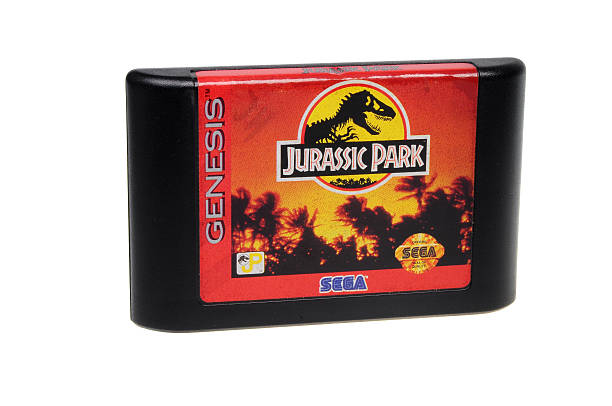
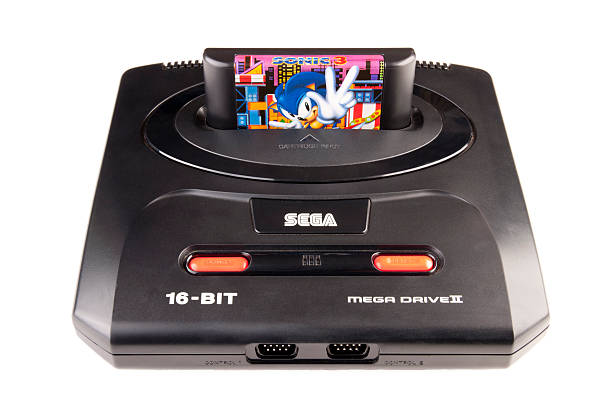
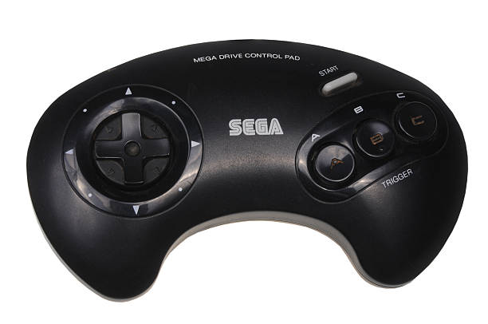
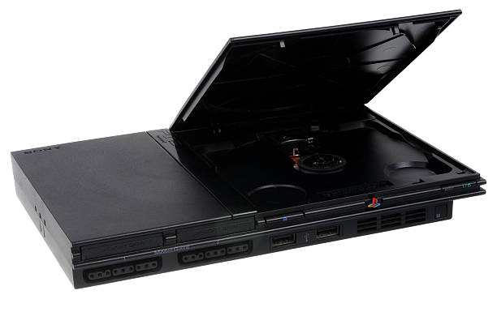
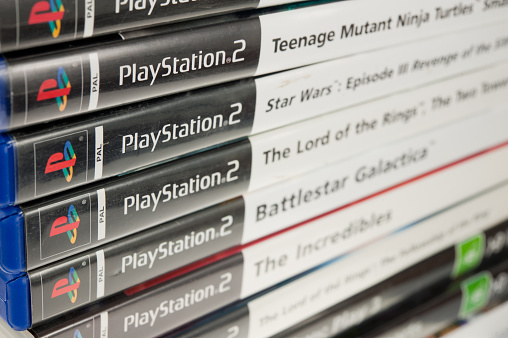

Meu objetivo é mostrar esses consoles que marcaram a infância muita gente, e até hoje são amados por gamers do mundo todo.
O Super Nintendo é um console amado até os dias de hoje. Lançado em 1990, vinha com o sistema de fitas (e quando não funcionava a gente assoprava as fitas hehe, bons tempos!) E não podemos esquecer do GAMEBOY, que foi lançado em 1989. O GAMEBOY reproduzia jogos 8-bits como Tetris, Pokémon e The Legend Of Zelda.
Igual ao seu rival, seu sistema também era por fitas (que também eram assopradas, hehe!). E as fitas traziam um charme ao console.
Conhecido como Sega Genesis na América do Norte, é um console de 16 bits da Sega que concorria diretamente com o Super Nintendo.
Seu controle com uma ergonomia confortável e inconfundível, traziam uma experiência única ao jogador.
Lançado nos anos 2000 o maior sucesso de vendas foi o famoso PS2, na foto vemos seu modelo SLIM.
O sistema dos seus jogos eram por CD's. Deixando a era das fitas para trás. (😔)
O PS2 foi, e ainda é, um dos consoles mais populares do mundo. Muito amado, marcou uma geração inteira. ❤